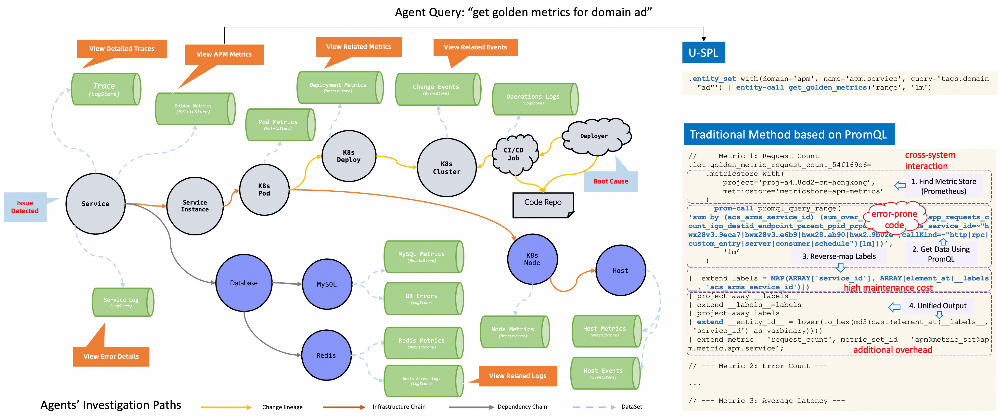

RCA Agent 评测：开源方案与 STAROps 的同一评测集对比
报告范围
本报告基于 RCA-100(RCA-Bench 当前版本数据集，103 个故障用例、28 类故障类型)评测集，分析生产环境 RCA Agent 在实体一致性、调查路径和结论复核三方面的工程能力缺口。报告同时给出两组实测结果：开源框架在Agent Framework、工具层语义化程度上的分数变化，以及 STAROps 通过 UModel(跨域实体归一化框架，把 APM / K8s / 云资源等域的实体映射到同一主键，21 类实体 + 4 类关系)、多阶段管道和结论复核带来的改进幅度。
评测口径
本文所有主结果均使用 RCA-100 分层评测集、相同任务输入和 brise 综合评分器。brise 是 RCA-Bench 配套的综合评分程序，按实体定位 E、故障类型 F 和调查过程 P 三个分量折算综合分 O，具体口径见评测基准 §5.2。因此，同一章节内的横向分数具备可比性。
本文比较的是两类 RCA 工程实现：一类是通用 Agent 框架接入 RCA 工具，另一类是包含 UModel、多阶段管道和结论复核的 STAROps 工程系统。该比较不用于给单一框架或模型排序，重点观察实体对齐、证据路径控制和结果可信度判断对 RCA 效果的影响。
根因诊断的起源
RCA Agent 工程能力缺口分析
面向生产环境的根因诊断任务，Agent 需要连续完成对象识别、证据采集和结论复核三类工作。结合 RCA-100 评测过程和典型生产链路，本章将通用开源 Agent接入 RCA 场景时暴露出的能力缺口归纳为三类：跨源实体一致性不足、调查路径稳定性不足、结论可信度判断不足。
开源 Agent 框架 RCA 实测结果
本章在固定模型与评分口径的条件下，对开源 Agent 框架在 RCA-100 上的表现进行实测分析。实验重点考察两类工程变量：一是Agent Framework差异对综合分的影响，二是工具层语义化程度对实体定位的影响。同时结合 token 用量、调用轮数和总耗时，分析资源消耗与诊断质量之间的关系。
图 3-3 · 实体 × 故障命中矩阵 · 5 个框架 × 3 类工具层
横轴为实体命中，纵轴为故障命中，气泡大小为综合分 O。PaaS-AI 表示在 PaaS 实体语义入口基础上增加 AIOps 算子的扩展配置。高分点主要集中在右侧，说明综合分首先受实体定位影响；故障命中整体偏低，即使 ReAct/PaaS 和 Multi-Debate/PaaS-AI 也未进入高 F 区域。切换至 IaaS 后，各框架的 O 均低于 35，表明原始资源 ID 工具层会放大实体命名差异，并进一步限制故障判定。
结果解读：实体 E 与故障 F 不同步上升可能反映 LLM-only 路线在故障类型识别上的结构性挑战。MicroRCA[5] 类基于拓扑图与异常传播的传统方法在故障类型层通常依赖人工规则；Eadro[6] 通过多源 trace 训练专用模型在 F 维相对有所提升，但泛化范围未必充分；LLM Agent 路线[7][8] 用通用推理替代专用模型，E 维方向上较为相近的优势在多次报告中可见，但 F 维的突破或许仍需机制级证据闭环约束。本图右下三角区域(高 E 低 F)与上述观察方向一致，目前 5 框架 × 3 工具层组合多落在该区域。
图 3-4 · 综合分与 token 用量 · 10 个组合对比
左侧展示总耗时与 token 用量，右侧展示 O 的 E/F/P 贡献拆分。token 用量与综合分不存在单调关系：Multi-Debate/PaaS 消耗最高，但综合分低于 ReAct/PaaS；Reflexion/IaaS 消耗最低，综合分也只有 25.92。资源消耗只能反映调查规模，不能直接代表诊断质量，需要结合实体命中、故障判定和过程分量综合判断。
结果解读：本图中 token 消耗与综合分之间未见明显单调关系，可能与 RCACopilot[7] 的若干讨论方向一致 — 即领域知识与证据组织对最终诊断质量的影响或许大于通用推理深度。Multi-Debate[12] 通过多 Agent 辩论提升 token 消耗以缓解单点幻觉，在 RCA 这类需要外部证据验证的任务上收益是否充分尚有待评估；Reflexion[13] 的语言反思机制对明确反馈信号的依赖较强，而 RCA 调查过程的中间反馈相对稀疏，这或可解释其在本组实验中收益的滞后表现。整体观察提示 LLM Agent RCA 的瓶颈可能更多在工程组织层而非单纯算力层。
图 3-5 · 耗时归因 · 轮数与单轮耗时
横轴为单轮 LLM 耗时，纵轴为 LLM 调用轮数，等时曲线表示总耗时的近似量级。Multi-Debate 的延迟主要来自 60+ 轮调用累积；Reflexion 调用轮数较少，但单轮耗时偏高且综合分不高。降低延迟需要同时控制调查轮数，并降低单次 LLM 调用和工具调用的等待时间。
结果解读：调用轮数与单轮耗时的双维度归因可能反映不同框架的延迟瓶颈差异。Multi-Debate[12] 的辩论机制或使调用轮数大致线性放大；Reflexion[13] 单次反思 prompt 更长，单轮延迟可能因此上升；ReAct[11] 在两维上的表现相对均衡。观察上看，本图等时线分布提示「轮数线性增长、单轮耗时受 prompt 长度影响」的两条独立路径，两者叠加才决定最终延迟。如生产部署对延迟敏感，工具层调用并行化与早停策略或可能比单纯优化模型更有效。
STAROps 对三类能力缺口的工程应对
本章承接 第二章对三类工程能力缺口的归纳，逐项说明 STAROps 的工程应对方式：跨源实体一致性不足由 UModel 统一实体与关系图谱予以收敛；调查路径稳定性不足由多阶段调查管道予以拆分约束；结论可信度判断不足由结论复核组件予以独立评分。三个组件分别覆盖实体、过程与结果三个环节，在 第五章同一评测集对比中共同支撑综合分的提升。

STAROps 与开源方案的同一评测集对比
评测口径：主对照使用 RCA-100 30 个案例分层评测集、相同任务输入和 brise 综合评分器。开源侧选取当前实测最优配置 OpenClaw + DeepSeek-V4-Pro，STAROps 取同一评测集前 3 次重复实验聚合。该口径保证主分数、三维分量和故障大类差距可以横向比较。
本章比较完整 RCA 工程系统与通用开源 Agent 方案在同一 RCA 任务上的差异。图 5-1 用于观察故障类型上的分布形态；图 5-2 至 图 5-4 分别给出故障类型、评分分量和故障大类三个层面的差距。
图 5-1 · 10 类故障 × 开源框架/工具层与 STAROps 综合分热图
图 5-1 为故障类型级补充视图。行表示 10 类故障，按 15 个开源框架与工具层组合的行均分从低到高排列；列表示 15 个开源组合(c01-c15)，第 16 列为 STAROps。色值表示 brise 综合分 O。STAROps 列均分为 75.23；开源组合中最高列均分为 53.4。
结果解读：STAROps 列与开源最高列之间约 22 分的均分差距覆盖多数故障类型，未见明显由单一强项拉动。该量级与 OpenRCA[9] / AIOpsLab[10] 报告的 LLM Agent 平均综合分区间方向相近，也说明通用 Agent 接入 RCA 工具后仍需要实体建模、调查管道和结论复核等任务专用约束。
边界、复现与后续验证
本章说明当前评测结论的适用范围、复现条件和后续验证安排。本文所有分数结论均依赖指定评测集、评分器和任务输入，不能直接外推到未覆盖的故障大类、生产流程或其他 Agent 运行环境。
本文以 5 个开源Agent Framework在相同评测集上的对比为依据，结果应作为方向性证据使用，不作为最终统计结论。复现实验需要固定四项条件：同一评测集、同一案例元数据、同一任务输入和同一 brise 评分器。RCA-100 数据集已公开，外部方案可以在相同口径下提交 Agent 执行框架、模型和工具层配置，用于横向对比。
后续复现应补充三类统计信息：更大规模评测集下的置信区间，不同抽样方式下的重采样稳定性，以及单案例多次运行的方差。只有在这些信息齐备后，故障大类级结论才适合从方向性比较升级为稳定结论。
初步实验显示，在固定 RCA-100 评测集、brise 评分器和工具设置后，不同前沿模型之间约有 10 分综合分差距。模型能力仍然影响证据阅读、跨步骤推理、工具调用规划和结论收敛，因此不能从当前实验中剔除模型因素。
同时，模型差距不足以解释全部系统级差异。STAROps 与 OpenClaw + DeepSeek-V4-Pro 在同一评测集主对照中的差距约为 24 分，高于已观察到的模型差距量级。该差距需要继续拆分为三部分：模型能力、Agent 执行环境能力、RCA 专用工程组件能力。
后续交叉评测将扩展两个维度：一是 Codex、Claude Code 等代码与工具调用型 Agent 运行环境，二是 GPT、Claude、Qwen、Gemini 等模型系列。评测设计应保持案例、工具层和评分器固定，逐项替换执行环境与模型，以区分 UModel、多阶段管道、结论复核、执行环境和模型本身的贡献。
名词术语表
| 缩写 | 英文全称 | 中文释义 |
|---|---|---|
| APM | Application Performance Management | 应用性能管理，监控应用层指标、调用链和服务状态的工具体系 |
| AUC | Area Under Curve | 分类器 ROC 曲线下面积。0.5 接近随机，1.0 表示完全区分 |
| RCA | Root Cause Analysis | 根因分析，本文指从告警或异常出发定位故障对象、原因和证据链的过程 |
| RCA-100 | — | 本文使用的根因诊断评测基准，包含生产事故样本和 30 个案例的分层评测集 |
| 评测集 | panel | 一次评测使用的案例集合。不同评测集的分数不能直接混用 |
| 分层评测集 | stratified panel | 按故障类型或场景分层抽样得到的评测集，用于降低样本构成偏差 |
| 评分器 | scorer | 根据诊断输出和标准答案计算 E、F、P 与综合分 O 的评测程序 |
| brise | — | RCA-100 配套综合评分器，输出 0-100 综合分 O 和 E/F/P 三个分量 |
| O | Overall score | 综合分，本文按 E、F、P 加权得到，量纲为 0-100 |
| E | Entity score | 实体定位分量，衡量诊断是否找准故障相关实体 |
| F | Fault score | 故障类型分量，衡量诊断是否判准故障原因或故障类别 |
| P | Process score | 调查过程分量，衡量调查步骤、证据链和结论过程是否充分 |
| Agent Framework | framework | Agent 的调查组织方式，例如 ReAct、Multi-Debate、Reflexion、Plan-and-Execute、OpenClaw |
| ReAct | Reasoning and Acting | Reasoning and Acting 框架，本文作为默认开源方案之一 |
| OpenClaw | — | 开源 Agent 框架之一。图 5-2 使用 OpenClaw 作为故障类型级对照 |
| ReAct PaaS | — | ReAct 框架搭配 PaaS 工具层的配置。图 5-3 使用它作为评分维度拆解基线 |
| IaaS | Infrastructure as a Service | 原始基础设施层工具集，按 pod_id、instance_id 等资源 ID 查询 |
| PaaS | Platform as a Service | 语义层封装的工具集，按 service 名或实体语义访问 UModel 数据 |
| PaaS-AI | — | PaaS 工具层的扩展配置，在 PaaS 实体语义入口基础上增加 AIOps 算子，用于 图 3-3 的 15 个组合评测集 |
| UModel | Unified Model | 统一实体模型，将 APM、日志、metric、拓扑、变更、告警等域映射到同一实体图谱 |
| 多阶段管道 | — | 将 RCA 调查拆成准备、调查、结论复核、综合等阶段，每阶段可检测失败并降级 |
| 结论复核 | — | 对定因结果和证据链进行检查，确认结论是否可以进入处置或复盘 |
| SOP | Standard Operating Procedure | 标准操作流程。本文指在 UModel 和多阶段管道中使用的命名调查路径 |
| trace | — | 一次诊断的执行轨迹，包含 LLM 调用、工具调用、时间戳和中间结论 |
| SRE | Site Reliability Engineering | 站点可靠性工程，负责生产系统稳定性、事故响应和复盘改进 |
| STAROps | — | 本文评测的 RCA Agent 工程系统，包含 UModel、多阶段管道和结论复核等组件 |
| third_party | — | 故障大类之一，指 DNS、上游 API、CDN 等外部依赖相关故障 |
| MTTR | Mean Time To Resolve | 事故平均修复时间 |
| SLA | Service Level Agreement | 服务等级协议 |
| SLO | Service Level Objective | 服务等级目标 |
参考文献
- Chen， P.， Qi， Y.， Zheng， P.， & Hou， D. CauseInfer: Automatic and Distributed Performance Diagnosis with Hierarchical Causality Graph in Large Distributed Systems. IEEE INFOCOM， 2014. IEEE Xplore.
- Liu， P.， Xu， H.， Ouyang， Q.， et al. Unsupervised Detection of Microservice Trace Anomalies through Service-Level Deep Bayesian Networks. IEEE International Symposium on Software Reliability Engineering (ISSRE)， 2020. Code & Paper.
- Chen， Y.， Yang， X.， Dong， H.， et al. Identifying Linked Incidents in Large-Scale Online Service Systems. ACM Joint European Software Engineering Conference and Symposium on the Foundations of Software Engineering (ESEC/FSE)， 2020. DOI 10.1145/3368089.3409768.
- Lin， Q.， Zhang， H.， Lou， J.-G.， Zhang， Y.， & Chen， X. Log Clustering Based Problem Identification for Online Service Systems. IEEE/ACM International Conference on Software Engineering Companion (ICSE-C)， 2016. DOI 10.1145/2889160.2889232.
- Wu， L.， Tordsson， J.， Elmroth， E.， & Kao， O. MicroRCA: Root Cause Localization of Performance Issues in Microservices. IEEE/IFIP Network Operations and Management Symposium (NOMS)， 2020. DOI 10.1109/NOMS47738.2020.9110353.
- Lee， C.， Yang， T.， Chen， Z.， et al. Eadro: An End-to-End Troubleshooting Framework for Microservices on Multi-source Data. International Conference on Software Engineering (ICSE)， 2023. arXiv:2302.05092.
- Chen， Y.， Xie， H.， Ma， M.， et al. Automatic Root Cause Analysis via Large Language Models for Cloud Incidents. EuroSys， 2024. arXiv:2305.15778.
- Roy， D.， Zhang， X.， Bhave， R.， et al. Exploring LLM-based Agents for Root Cause Analysis. FSE Companion， 2024. arXiv:2403.04123.
- Xu， J.， Zhang， Q.， Zhong， Z.， He， S.， & Pei， D. OpenRCA: Can Large Language Models Locate the Root Cause of Software Failures?. International Conference on Learning Representations (ICLR)， 2025. OpenReview.
- Chen， Y.， Shetty， M.， Somashekar， G.， et al. AIOpsLab: A Holistic Framework to Evaluate AI Agents for Enabling Autonomous Clouds. Proceedings of MLSys， 2025. arXiv:2501.06706.
- Yao， S.， Zhao， J.， Yu， D.， Du， N.， Shafran， I.， Narasimhan， K.， & Cao， Y. ReAct: Synergizing Reasoning and Acting in Language Models. International Conference on Learning Representations (ICLR)， 2023. arXiv:2210.03629.
- Du， Y.， Li， S.， Torralba， A.， Tenenbaum， J. B.， & Mordatch， I. Improving Factuality and Reasoning in Language Models through Multiagent Debate. International Conference on Machine Learning (ICML)， 2024. arXiv:2305.14325.
- Shinn， N.， Cassano， F.， Berman， E.， Gopinath， A.， Narasimhan， K.， & Yao， S. Reflexion: Language Agents with Verbal Reinforcement Learning. Advances in Neural Information Processing Systems (NeurIPS)， 2023. arXiv:2303.11366.
- Wang， L.， Xu， W.， Lan， Y.， Hu， Z.， Lan， Y.， Lee， R. K.-W.， & Lim， E.-P. Plan-and-Solve Prompting: Improving Zero-Shot Chain-of-Thought Reasoning by Large Language Models. Association for Computational Linguistics (ACL)， 2023. arXiv:2305.04091.
- Alibaba Cloud. Alibaba Cloud Observability MCP Server. GitHub.
- 阿里云. 什么是云监控 2.0(CloudMonitor 2.0). 阿里云帮助中心. help.aliyun.com.
- Prometheus Authors. Querying Prometheus — PromQL Basics. Prometheus Official Documentation. prometheus.io.